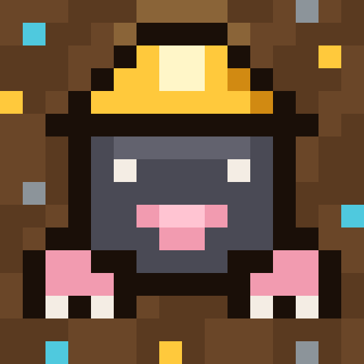

SkyMole
Dwarven Mines and mining helper for Hypixel SkyBlock
by sculike
Core palette
Lamp gold#FFC93C
Main accent
Snout pink#F29BB0
Signature, sparingly
Deep dirt#5A3A20
Backgrounds
UI and status
Panel#1E1712 80%
HUD background
Text dim#B5A797
Labels, numbers
Warn#FF7A45
Low fuel, cold
Mithril#4FC9DE
Info, powder
In game
Commissions
Goblin Slayer45%
Mithril Miner80%
Lava Springs TitaniumDone
Powder
Mithril+48,210 96k/h
Gemstone+12,900 26k/h
Drill fuelLow · 812
SkyMole » Commission done: Lava Springs Titanium
Gold leads. Titles and the chat prefix use lamp gold. Nothing else uses it, so it always means "this is SkyMole".
Pink is rare. Only the logo, the "by sculike" line and gemstone values.
Status colors mean one thing. Green done, orange warning, red danger, cyan info. Never as decoration.
Warm darks. Panels use brown-black, not gray, so the HUD feels like the mines.